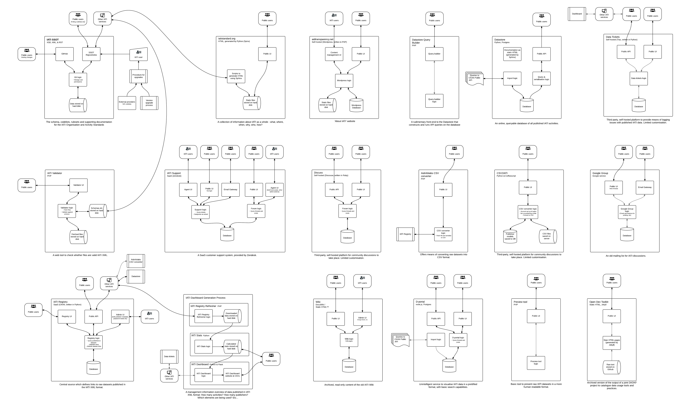

The IATI Technical Team is currently working to review the behind-the-scenes architecture and design underlying the various core IATI tools and services (products). This consists of the various public-facing products including the IATI websites, tools such as the Validator and services such as the Dashboard, Datastore, etc.
To help ensure the core IATI products are useful to the widest a range of users possible, the Technical Team intends to make its key development plans public as it becomes reasonable to do so. Watch this space for further posts on our work!
Comments welcome!
We are keen for feedback from the wider community and we will attempt to integrate this into development plans as appropriate. This will allow the Technical Team to ensure its development priorities fit within the wider IATI ecosystem to best support both publishers and users of IATI data - we encourage users and tool developers to post comments below or express an interest in joining our upcoming IATI community tech calls.
IATI System Architecture - Background
At present the IATI Technical Team maintains a large number of distinct products. In general, these are built individually in such a way that common functionality is often re-implemented in each situation. The below diagram demonstrates the current architecture, blocks being distinct services, and connecting arrows indicating the sharing of some functionality.
Click for full size version
{kind=link}
Our aims for an improved Architecture
The current architecture has allowed IATI to reach its current point, however sustainability could be improved going forward due to the ongoing maintenance overhead and other surrounding issues. As such, there are a number of key objectives that a new architecture should satisfy:
- Utilise a single programming language as the base of all core IATI products
- Provide easily reusable ways to undertake common functionality such as Validation, fetching data from the Registry, and locating a subset of IATI data
- This functionality should be open-sourced and publicly reusable by those outside the IATI Technical Team
- Update data in a far more timely manner than daily updates that are typical at present
- Require minimal overhead to maintain products that are up and running
-Allow for deployment with minimal manual intervention
Planned Architecture
To achieve the desired outcomes, the IATI Technical Team plans to migrate to a library-based architecture. At the core will be an open-source library containing common functionality including representations of SSOT constructs, validation capabilities, and methods to obtain IATI data. Specific details are still being fleshed out, with some key uncertainties highlighted in the below diagram.
{kind=link}
Library
The library will be written in Python and will be distributed publicly using the PyPi python package index.
This new library will be used internally, with core IATI services refactored over time to use the library as a base for common tasks. It is intended that the library will make it easier to use IATI data by removing the need to reinvent the wheel before moving onto implementing innovative functionality, performing analysis of data or simply accessing data for data visualisations.
Current plans for library components include:
-
Core - will allow programmatic access to SSOT constructs - i.e. the schema, codelists, rulesets
-
Validate - an API to validate IATI XML against the schema, codelists and rulesets. The new validator API and web user-interface will heavily use this functionality
-
Fetching data - functionality will be included to download individual raw IATI XML datasets (i.e as a wrapper around the IATI Registry API) links to queryable data (i.e. as a wrapper around the Datastore API)
-
Format conversion (i.e. converting between versions of the IATI Standard or from XML to CSV) - under exploration
The underlying code will be available open-source on our Github code repositories. Given that we envisage this library being of benefit to all IATI tool developers, contributions to code and documentation would be very welcome - we will outline where specific involvement could take place as our plans progress…
Services and Communication
The core IATI products built on top of the library will be split into distinct services that communicate with each other in a clearly defined manner.
For those products with an interactive web UI, such as a Validator, REST interfaces will be defined to communicate with the server. Further REST APIs may be developed to surround other functionality where demonstrable need arises. These interfaces will be documented and usable by third-party products, including those where it may not be possible to directly integrate with a Python library, for example because they are written in another language.
Deployment
It will be ensured that all new core IATI products will have clearly defined methods of deployment. A configuration management system such as Salt or Ansible will be used to perform this task. The chosen system will also be used to define how to deploy existing products that require significant manual intervention to deploy.
Product Roadmaps
As mentioned above, the various IATI products will be refactored over time to make use of the new library and associated architecture. As such, a review of product roadmaps is additionally being undertaken by the Technical Team. The outcome is a short description of the capabilities and purpose of each product, as well as the development intentions over varying timescales.
This roadmap review will be released within the next week - watch this space!